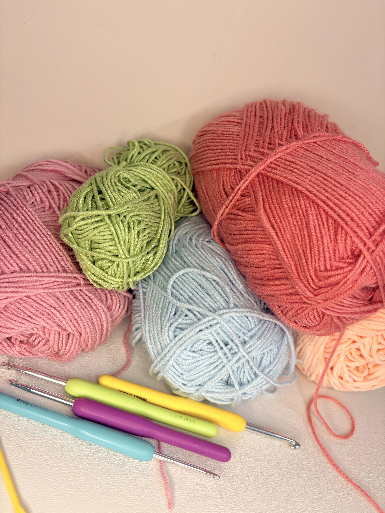
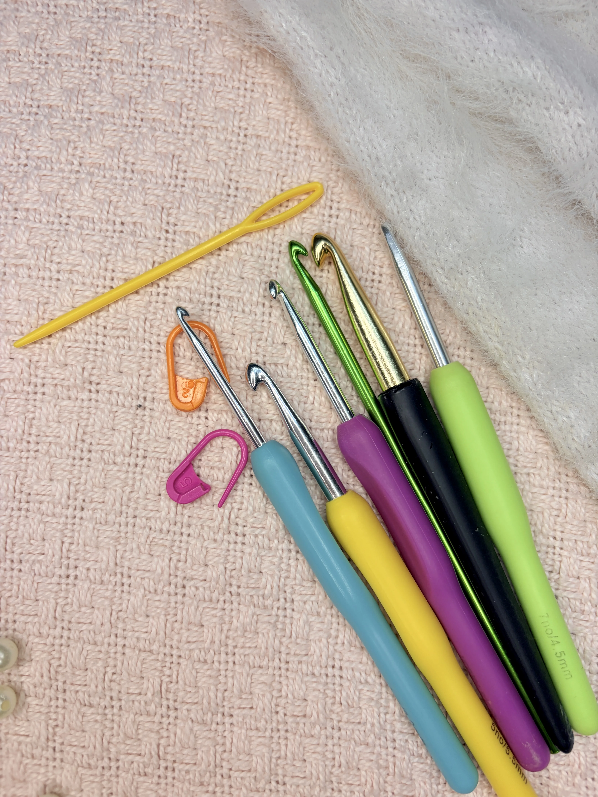
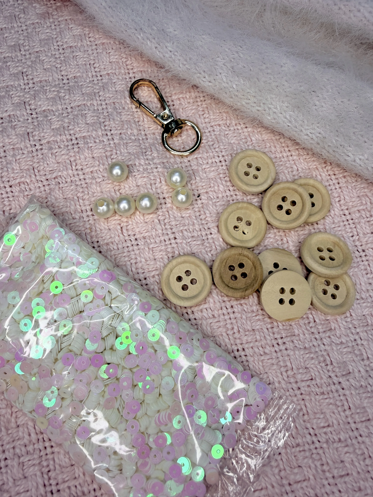

Buttons, Beads & Embellishments
The little details that make a crochet project feel special.
Explore Embellishments



The little details that make a crochet project feel special.
Explore Embellishments